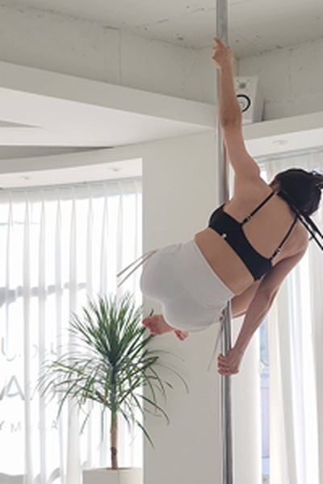
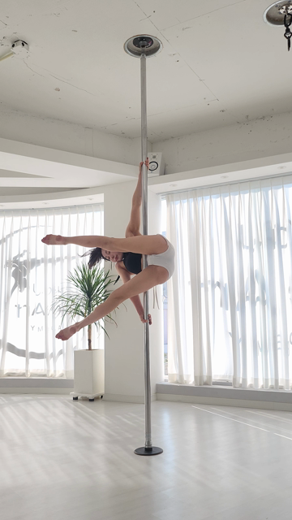
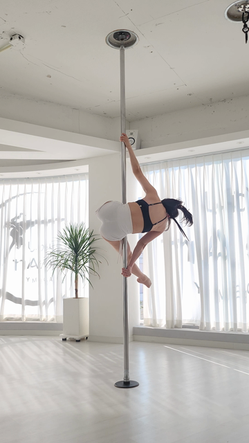
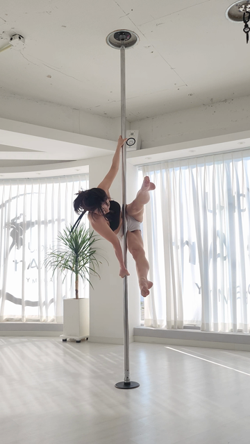
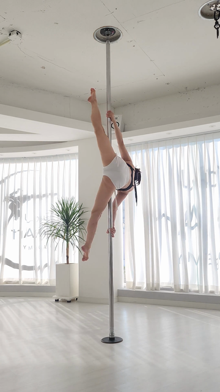
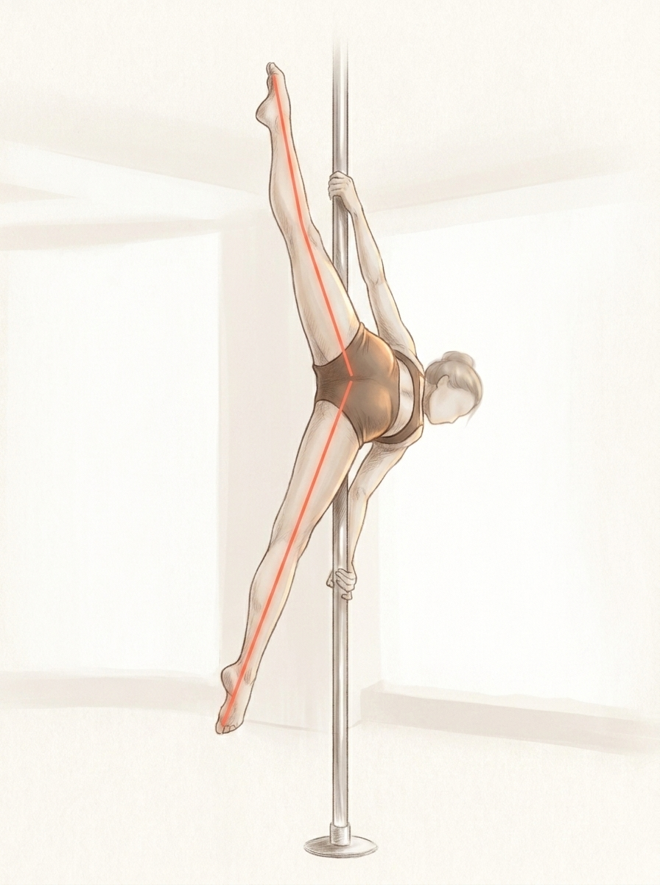
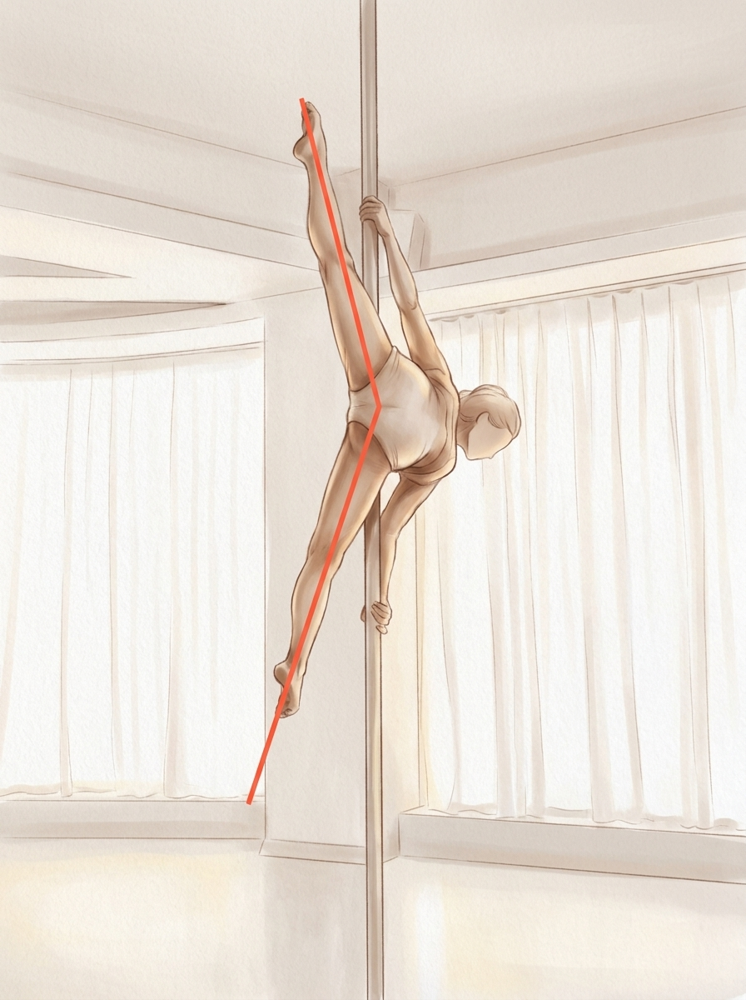
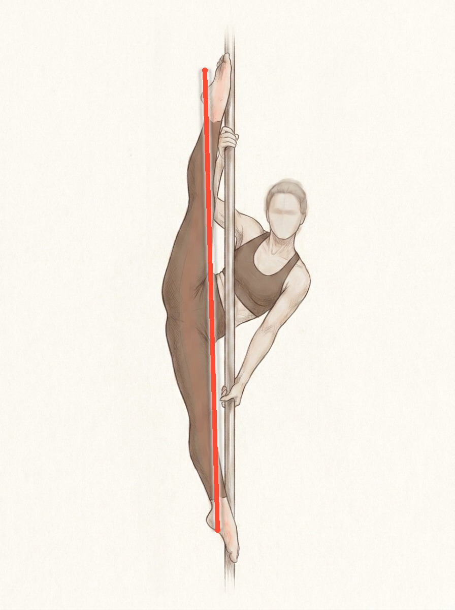
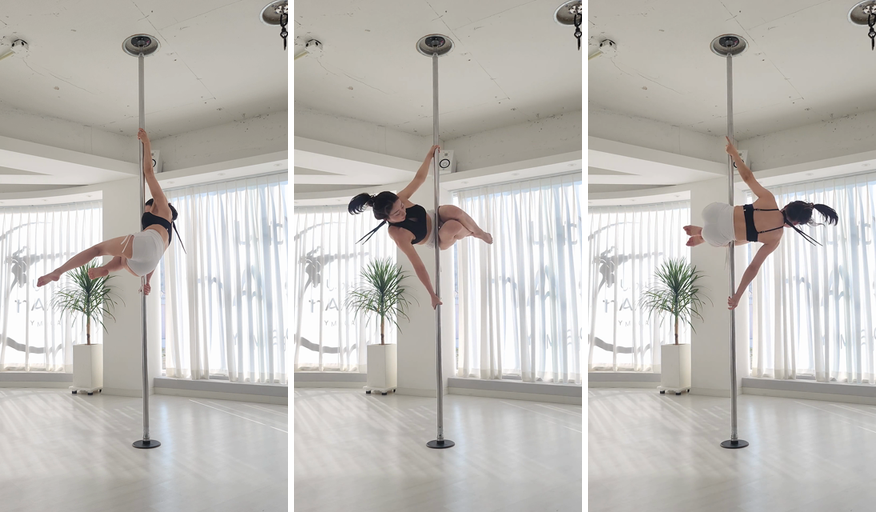

2라운드 수정: 1라운드는 관절 단위 원 7개 — 항목은 3개(다리·어깨·참고)인데 동그라미가 7개라 혼란(belle 지적). → 마커를 항목 단위 그룹 3개로: 다리 = 엉덩이 2 + 무릎 2 를 묶는 그룹 1개, 어깨 = 그룹 1개, 참고(손) = 점선 1개. 채점이 짚은 관절 집합(doc faultJoints 여섯)은 그대로 — 표시만 항목으로 묶었어요. 그룹이나 아래 부위 버튼을 누르면 ② 상세로 이동해요.

읽는 법: 실선 그룹 = 감점 항목의 부위(다리 그룹 = 채점이 짚은 엉덩이·무릎 4관절을 한 테두리로, 어깨 그룹 = 어깨 2관절). 화면의 표시 수 = 항목 수 = 3. 점선 = 참고 — 점수 감점은 되지 않지만 회전·힘 같은 전체 동작에 영향을 줄 수 있는 부위예요. 그룹 경계는 doc keypointReport 실좌표의 항목별 관절 묶음이라 짝 없는 표시가 아니에요. 저신뢰 구간에서는 그룹이 자동 생략돼요 — ③ 최악 케이스에서 실물로 확인. 정직 표기 (5라운드): 다리 항목 중 "벌림"은 특정 순간을 잰 프레임 측정이 아니라 두 영상 전체를 견준 AI 시각 판단이에요 — ② 상세의 해당 블록에 같은 라벨을 달았어요.
기본 화면에서 부위를 탭하면 열리는 상세예요. 7라운드 수정 2건: (1) 감점근거 글 사람 말 재작성 — "마무리 스플릿 국면"·"신전 완성도" 같은 채점 내부 용어를 화면 문장에서 걷어내고 강사가 수강생에게 말하듯 다시 썼어요. 도메인 정정: 이 구간은 한쪽 발끝은 천장, 반대쪽 발끝은 바닥을 향해 다리를 위아래로 거의 180° 찢는 수직 스플릿이라(33-A1 실측), "발끝으로 천장" 단일 큐를 양다리 방향 카피로 교체했어요. record 원문·수치는 ⑤ 대조 표에 그대로 보존(사실값 불변) — phrasebook 데이터 반영은 A-6(33-13). (2) 어깨 각도 재재배치 — 6라운드 배치는 꼭짓점이 어깨 관절이라 각이 몸통 위쪽에 떠 보였어요(belle 지적 + 파란 손그림). 7라운드 = 꼭짓점을 겨드랑이로 내리고, 위 선은 팔을 따라, 아래 선은 겨드랑이에서 옆구리 몸 윤곽을 따라 골반 쪽으로, 호 반경을 줄여 각이 겨드랑이 안쪽에 작게 앉게 했어요. 학생 패널도 같은 원리로 재작도(겨드랑이 근사 = kp 어깨→엉덩이 선분 15% 지점 — 일반화 규칙, 좌표 = ⑤). 실측각은 그대로 두고(기준 ≈130°·학생 ≈140°) 수치는 비노출. 5·6라운드 반영분(신전 기준 줄 + 증거 3컷, 벌림 AI 시각 판단 정직 라벨, DTW 실측 순간, 초 표기)은 유지.
belle 확인 포인트 (7라운드): (1) 어깨 — 각의 꼭짓점이 겨드랑이에 앉았나요? 아래 선이 옆구리 몸 윤곽을 따라 골반 쪽으로 내려가나요? 보내주신 파란 손그림과 모양이 같나요? (각과 호가 몸 밖 허공이나 몸통 위쪽에 뜨지 않는지 봐주세요) (2) "고칠 것 1·2" 카드의 글 — 이제 강사가 말하듯 읽히나요? "국면" 같은 어색한 말이 남아 있나요? 큐가 양다리(위쪽 발끝 = 천장 · 아래쪽 발끝 = 바닥) 방향으로 읽히나요?
좋은 케이스만으로 그린 목업은 무효(D-08). 아래 전부 실물 데이터 — 합성 0. 컷마다 "이 컷이 답하는 확인 질문"을 맨 위에 달았어요 — 질문에 "예"로 답해지는지 봐주시면 돼요.
흐름(재생→멈춤+강조→재개)과 5라운드 재앵커(멈춤 컷 = 실 7.5초 왼다리 재굽힘, 33-A4 실증)는 유지. 6라운드 수정: 마커가 가리키는 부위를 카피와 일치시켰어요. 카피는 "왼다리가 다시 굽었어요"인데 강조 원이 엉덩이(쇼츠)에 찍혀 있었고, 오른다리 선도 엉덩이 하단(hip 관절)에서 시작해 엉덩이를 가로질렀어요. → 원을 접힌 왼무릎(다리) 부위로 내리고(프레임 확대 열람으로 육안 배치 — 접힌 왼다리는 kp 게이트 미달이라 수동, ⑤ 공개), 오른다리 선은 가시 다리 구간만(hip→knee 실좌표 선분의 65% 지점부터) 그려요. 좌표 출처는 그대로 kp150 실값. (phrasebook cueLine 개정은 A-6(33-13) 후속 — 이 플랜에서 phrasebook 미수정)



7라운드: belle 제안 반영 — "정은지 선수가 그 시점에 펼친 완벽한 동작을 그냥 일러스트화". 지금까지는 목표 자세를 새로 그리는 방식(5R 생성 + 6R 선 교정)이었는데, 이번엔 기준 영상의 실측 프레임(실 8.5초 — 수직 스플릿 완성 순간, hold 구간 7.1~10.2초 안)을 입력으로 일러스트화한 후보들을 나란히 놓았어요. 골라주시면 그게 A-7(33-14) 생성 요건이 돼요 — 실측 프레임안이 채택되면 규칙이 "동작별 기준 영상의 국면 완성 프레임 → 일러스트화"로 바뀌어요. 생성 경로 정직 공개: 시도 6회 중 4회는 자세가 앉은 자세로 후퇴해 기각(기각 실물 = ⑤ 콘택트시트), 아래 후보 2장이 검수 통과분이에요. 익명화(실존 인물 입력 → 이목구비 제거) 두 장 모두 확인. 미채택 스타일 시도들(6R try1/2)은 화면에서 뺐어요(파일 보존, 기록 = ⑤). 일러스트 동반(B) 자체는 3라운드 확정 결정이라 다시 묻지 않아요 — 고르는 건 "어떤 그림이냐"예요.




belle 확인 포인트 (7라운드): 일러스트 후보군에서 골라주세요 — 후보 1(실측 프레임 일러스트화, 선 포함) / 후보 2(같은 방식, 구도 다름 — 선은 교정 필요) / 현 채택본(목표 자세 신규 작화) 중 어느 방향인가요? 실측 원본 사진과 견줘 후보들이 "정은지가 그 시점에 펼친 동작"으로 읽히는지 봐주세요. (생성 경로·기각 4건 = ⑤ 정직 기록) 재생 바 마커 정직 표기: 마커 = 항목별 안내 음성 시점이에요. 신전(91%) = 실측 재굽힘 순간(실 7.5초) · 벌림(85%) = 영상 전체 시각 판단이라 순간이 없어 학생 최대 스플릿(실 7.0초)을 표시 앵커로 · 어깨(21%) = 전 구간 비교의 표시 앵커(실 1.7초). 누르면 그 항목으로 이동하는 동작을 상정해요.
| 에셋 | 출처 (S3 key / 원본) | 비고 |
|---|---|---|
| belle_zoom_left_hip / left_shoulder / adv_left_hand | results/csKWYvI3WCPYPysNQ9KkWecaUvq1/071df9f894d64d1696f106e613f51f5c/zoom_*.png |
belle 실 doc 저장 크롭 (2026-07-22 렌더 — 구 파이프라인: 각도 배지 잔존) |
| etws_zoom_left_knee / adv_right_shoulder / adv_right_hand | results/phase25eval/elbowtwistINVCHK260728badge2/zoom_*.png |
역립 실 doc 자연 렌더 (2026-07-28, 최신 파이프라인 — 배지 제거 후) |
| belle_still_f010/f018/f022/f027/f014, belle_panel_D | uploads/csKWYvI3WCPYPysNQ9KkWecaUvq1/071df9f894d64d1696f106e613f51f5c.mp4 → 9fps·640px 추출(파이프라인 동일 규격), crop/resize 만 |
합성·보정 0. 마커 좌표 = doc keypointReport 실값(kp34) |
| belle_ref_full_hold | reference/ref-power-spin.mp4 t=9.0s (hold 구간) |
대응 실패 폴백 표시용 기준 전신 실프레임 |
| belle_shoulder_pair_facing 4R — 5R 교체됨 | 좌 = uploads/csKW…/071df….mp4 v17 (doc u34 순간) · 우 = reference/ref-power-spin.mp4 v40 (t≈4.0s) |
4라운드 쌍 — 5라운드에서 기준 패널의 순간이 DTW 실측 순간과 어긋남이 실증돼(33-A4 §6-2) belle_shoulder_pair_dtwmatch 로 교체. 파일은 기록 보존(미사용) |
| belle_shoulder_pair_dtwmatch 5R — 6R 교체됨 | 좌 = 4R 학생 패널 그대로 재사용(byte 재사용, 승인분) · 우 = reference/ref-power-spin.mp4
원본 프레임 92 (기준 각도공간 r46 = DTW 가 실제로 짝지은 측정 순간, 실 3.07s) S3 재다운로드 → 360×640 추출 → 220px 크롭 |
5R 쌍 — 우 패널 앵커(apex 133,243·팔 155,218·골반 190,293)의 "사이각 ≈90°"는 아래 선이 몸통(가슴)을 가로질러 무릎 쪽을 향해 만들어진 인위각이었음이 6R 에서 판정(belle 지적: 직각으로 안 보이고 아래 선이 몸을 가로지름) → belle_shoulder_pair_dtwmatch_r6 으로 교체. 파일은 기록 보존(미사용) |
| belle_shoulder_pair_dtwmatch_r6 6R — 7R 교체됨 | 좌 = 5R 쌍의 학생 패널 픽셀 그대로 재사용(승인분) · 우 = 같은 원본 프레임 92 (r46, 실 3.07s) S3 재다운로드 → 360×640 추출 → 220px 크롭(어깨 중심) → 재작도 | 6R 쌍 — 우 패널 앵커: 꼭짓점 = 어깨 관절 (141,245)·팔 (151,221)·옆구리 (170,297), 사이각 ≈128.2°. 7R 기각 — belle 지적("각도가 90도가 넘어가 보이고 몸 위쪽에 등장, 겨드랑이와 옆구리쪽에 정확하게 맞아야") + 파란 손그림: 꼭짓점을 어깨 관절에 두니 각·호가 몸통 위쪽에 떠 보였음 → belle_shoulder_pair_dtwmatch_r7 로 교체. 파일은 기록 보존(미사용) |
| belle_shoulder_pair_dtwmatch_r7 7R 신규 | 좌 = 학생 s017 프레임(실 1.70s, 로컬 보관분)에서 겨드랑이 중심 220px 재절단 + 재작도 · 우 = 같은 원본 프레임 92 (r46, 실 3.07s) S3 재다운로드 → 360×640 추출 → 겨드랑이 중심 220px 재절단 + 재작도 | ② 어깨 상세 쌍 (7R — belle 파란 손그림 원리: 꼭짓점 = 겨드랑이, 아래 선 = 옆구리 몸 윤곽 따라 골반 쪽). 우(기준) = 수동 육안 배치 공개(5px 그리드 확대 정독): 꼭짓점 = 겨드랑이 크리스 (139,251) · 팔 선 방향 (147,222) = 상완 위 · 옆구리 선 방향 (166,290) = 옆구리 따라 허리밴드 쪽 (360×640 좌표). 좌(학생) = kp34 기반: 겨드랑이 근사 = shoulder(203,254)→hip(182,304) 선분 t=0.15 지점 (200,262)(일반화 규칙 — 육안 검증 통과) · 팔 선 = kp elbow(186,215) 방향 · 옆구리 선 = kp hip 방향. 기하 = 팔 선 64px·옆구리 선 85px 유지, 호 반경 27→16 축소(각이 겨드랑이 안쪽에 작게), 두 패널 꼭짓점 = 정중앙(180,180). 실측 사이각 = 기준 129.9° · 학생 139.8°(수치 비노출·호만). 검증 = 렌더 확대본을 belle 스케치(4.png)와 나란히 비교 열람 |
| belle_still_f070 / f075 / f082 5R 신규 | uploads/csKW…/071df….mp4 S3 재다운로드 → 파이프라인 동일 그리드(원본 3i 프레임)·360×640 추출:
src 210 / 225 / 245 = 실영상 7.01s / 7.51s / 8.18s |
④ 3컷 재앵커분 (f082 = 마지막 원본 프레임). crop/resize 0, 원프레임 그대로 — f075 의 다리 선·부위 원은 HTML 오버레이(kp150 실좌표 + conf 게이트, 베이크 아님) |
| ev_stu_f66_real6.61s_vsplit 5R 신규 | evidence_a4/stu_f66_real6.61s_r00window_vsplit.png 원본 복사 (33-A4 증거 프레임) |
② 신전 블록 증거 3컷 스트립의 첫 컷(폄 순간) — 나머지 두 컷은 belle_still_f075/f082 재사용 |
| illust_powerspin_target_A7_line6 사진 아님 6R 신규 | 5R 채택본(illust_powerspin_target_A7) 위 Python PIL 오버레이 교정: 구 곡선 가이드 선을 코럴 픽셀 검출(14,432px)+주변 중앙값 인페인트로 제거 → 양다리를 관통하는 곧은 한 줄 (403,138)→(428,1042) 재작도 (코럴 #FF4B33 코어 9px + 소프트 halo) | 정직 노트 (6R): belle 지적 = 가이드 선이 엉덩이처럼 읽힘 → 우선 gemini-3-pro-image 재생성 2회 시도, 둘 다 실패: 1차 = 선은 자로 그은 듯 곧으나 자세가 폴 옆 바닥 스탠딩 스플릿으로 후퇴(목표 자세 아님) · 2차 = 폴 위 자세는 유지되나 선이 여전히 골반에서 굽음. 시도 실물 = illust_r6_regen_try1/try2 (아래 행). → 예고된 폴백대로 채택본 위 선 교정 오버레이로 반영. 인물·자세·해부학 = 5R 검수 통과본 그대로(변경 = 선뿐). 직선 배치는 발끝-발끝이 아닌 윗발등~아랫발목 — 이 그림의 두 발끝은 일직선상에 있지 않아 발끝-발끝 직선은 다리 밖(공중·폴)을 지나기 때문(부위 일치 원칙). 검증 = 상·중(골반)·하 3구역 확대 열람으로 선이 몸 위에만 얹힘 확인 |
| illust_r6_regen_try1 / try2 사진 아님 · 미채택 | gemini-3-pro-image 재생성 시도 실물 (32-08 레시피 + 2안 스타일 앵커; try2 는 채택본을 자세 참조로 추가 입력) | 6R 기각 2건 — 기각 사유는 위 정직 노트. 기록 보존용(미사용). 7R: belle 지시로 화면 표시 대상에서 제외 확정(파일 보존) |
| ref_real8.50s_P5_vsplit_input 7R 신규 | reference/ref-power-spin.mp4 S3 재다운로드 → 원본 프레임 255 (30fps = 실 8.50s,
hold 구간 7.1~10.2s 안) → 360×640 리사이즈 |
④-b 후보군의 입력 실측 프레임 — 수직 스플릿 완성 순간. 후보 순간 4컷(실 8.0/8.5/9.0/9.5s) 전수 열람 후 선정: 8.5s 가 두 다리 한 줄 라인이 가장 곧음(8.0·9.5s = 얼굴 정면 노출 + 라인 미세 굽음, 9.0s = 다리 교차 전환 순간) |
| illust_powerspin_refframe_cand1_r7 / cand2_r7 사진 아님 7R 신규 · 후보 | gemini-3-pro-image 이미지 투 이미지 (v1beta generateContent · responseModalities [TEXT,IMAGE] · aspect 3:4 · SSM 키): 입력 1 = 위 실측 프레임(자세 원본), 입력 2 = illust_variant2_pro.jpg (belle 확정 2안 스타일 앵커). 프롬프트에 익명화 명시(실존 인물 입력 → 이목구비·헤어 디테일 재현 금지) + 곧은 가이드 선 요건(A-7 6R 규칙) | ④-b 일러스트 후보군 (belle 선택 대기). 검수: cand1 = 전 항목 통과(팔 2·다리 2·관절 자연· 무이목구비·수직 스플릿 유지·선이 다리 위 한 줄 — 골반에서 미세 꺾임은 다리 실배치 추종 수준) · cand2 = 자세·해부학·익명 통과, 선 결함 공개(골반에서 꺾임 + 아래 발끝 밖으로 초과 — 화면 라벨에 명시, 채택 시 6R 표준 폴백(인페인트+직선)으로 교정). 사용권·likeness 회피 = 32-08 provenance 동일 조건 |
| illust_r7_rejects_contact 사진 아님 · 기각 기록 | 7R 생성 시도 6회 중 기각 4건(try2·3·4·6)의 콘택트시트 1장 (원본은 스크래치 보관) | 기각 사유 전부 동일 계열 = 자세 후퇴: 실측 프레임(몸 기울고 아래 다리가 바닥을 향해 뻗음) 대신 앉은 자세(아래 다리 접힘)로 생성됨 — 프롬프트에 "아래 다리 곧게 아래로, 앉은 자세 금지"를 명시해도 4/6 재발. A-7 구현 시 자세 충실도 검수가 필수 게이트라는 근거 기록. 화면 미표시(belle "미채택은 굳이 없어도") |
| illust_powerspin_target_A7 사진 아님 5R — 6R 선 교정으로 교체됨 | Gemini gemini-3-pro-image 생성 (32-08 레시피: v1beta generateContent ·
responseModalities [TEXT,IMAGE] · aspect 3:4 · SSM 키) + 스타일 앵커 = illust_variant2_pro.jpg 이미지 입력 |
④-b B안 일러스트 = A-7 실물 1호. 파워스핀 목표 자세 컷(수직 스플릿 한 줄) + 다리 라인 코럴 가이드 선 + 익명(무이목구비)·무텍스트. 시도 2회 중 1차 채택 — 해부학 검수 통과(다리 2·팔 2· 관절 자연·손발 확대 열람); 2차분은 아랫무릎 미세 굽힘+이목구비 노출로 기각. 사용권·likeness 회피 = 32-08 provenance 와 동일 조건 |
| belle_still_f017 3R — 5R 정정 | uploads/csKW…/071df….mp4 → 9fps·640px 추출 s017 |
5R 정정: 3R 표기 "t=1.89s = doc u34 감점 측정 순간"은 둘 다 오류로 실증(33-A4 §6) — 실영상 시각은 1.70s(1.89 는 명목 9fps 환산 오차)이고, u34 는 감점 측정 순간이 아니라 비전 표시용 창의 크롭 프레임. ④ 는 5R 에서 f075 로 재앵커, 이 파일은 ② 어깨 쌍 좌 패널(원본)로만 잔존 |
| illust_variant2_pro.jpg 사진 아님 | .planning/phases/32-result-readability-3-omni/samples/illust_variant2_pro.jpg (32-08 belle 확정 준실사 2안 시안 원본 복사) |
④-b B안 일러스트 — 표현 장치(실데이터 원칙 D-10 과 별개). 동작은 파워스핀 아님(스타일 확인용), power-spin 전용 컷은 A-7(33-14) 생성 |
| probe_facing_strip 2R 신규 | 학생 v17 | 기준 v45(구 정렬 순간) | 기준 v40(방향 일치 채택) — 위 두 영상 실프레임 | 아래 "방향 일치 프레임 탐색 기록"의 시각 증거 (한 장에 3프레임 나란히) |
| 받은 시각: 1라운드 2026-07-28 19:00~19:05 KST + 2라운드 신규 2장 20:40~20:55 KST + 3라운드 갱신(어깨 쌍 표시 베이크·s017 추가) 2026-07-28 21:40~21:55 KST + 4라운드 갱신(어깨 쌍 재중심 — 원본 프레임은 3라운드 로컬 보관분 재사용, 재다운로드 없음) 2026-07-28 22:23 KST + 5라운드 갱신(학생·기준 영상 S3 재다운로드 → f070/f075/f082·기준 r46 재추출, kp150 좌표 Firestore 읽기 전용 조회, 일러스트 생성) 2026-07-28 23:15~23:35 KST + 6라운드 갱신(기준 영상 S3 재다운로드 → r46 프레임 재추출·어깨 쌍 재작도, 일러스트 재생성 2회 시도 + 오버레이 교정) 2026-07-29 08:00~08:20 KST + 7라운드 갱신(기준 영상 S3 재다운로드 → r46·실 8.5s 프레임 재추출, 어깨 쌍 겨드랑이 기준 재작도, 일러스트 후보 생성 6회 시도) 2026-07-29 09:05~09:30 KST · doc = uid csKWYvI3WCPYPysNQ9KkWecaUvq1 / analysis 071df9f894d64d1696f106e613f51f5c (status done · mode1 · 51점 · faultZoomStatus done) | ||
belle 질문: "벌림을 먼저 말하는 순서가 나 좋으라고 지어낸 것 아니냐."
답: 글의 내용은 전부 doc result.deductionBreakdown.records 실값이고, 순서만 화면 배치예요 —
doc 저장 순서는 r00(신전)→r01(벌림)인데, 카드 사진의 빨간 두 줄이 벌림각 렌더라서 사진이 가리키는
결함(벌림)을 첫 블록으로 올렸어요. 대조 중 2라운드 글의 의역 3곳·수치 오독 2곳을 발견해 원문·원값으로
교체했어요 (아래 표 — 숨기지 않음).
| doc record (실값 인용) | 화면 글 (3라운드) | 대조 |
|---|---|---|
| r01:split_angle — source="vision" · deviationSource="reference_relative" · statusLine="다리를 벌린 각도가 기준보다 좁아요" · whyLine="다리를 더 벌리지 못하면 스플릿 완성도에서 감점되는 부분이에요" · cueLine="양 무릎을 각각 반대쪽 벽으로 밀어낸다는 느낌으로 다리를 벌려보세요" · measuredValue=30.0(기준 대비 편차) · tolerance=20.0 · deviation=10.0 · points=−12.0 | 벌림 블록 (7R 사람말 재작성): 제목 = 원문 그대로 · why = "…다리를 위아래로 거의 180도까지 찢어야 해서, 덜 벌어진 만큼 심사에서 감점되는 부분이에요" (원문의 "스플릿 완성도" 용어 제거 — 180° 목적 설명의 근거 = 33-A1 실측: 한 다리 위 155~180°·한 다리 아래 0~33° = 위아래 일자) · cue = "위쪽 다리와 아래쪽 다리를 서로 반대 방향으로 밀어낸다는…" (원문 "반대쪽 벽으로" = 옆 방향(스트래들) 함의 — 실측은 폴 축 위아래 스플릿이라 방향 오류, 33-A1 방향 정정과 동일 판정) · 수치 = "기준 대비 30° 좁음 → −12점" 불변 | 사실값 일치 · 문장 재작성 공개 2R 오독 수정(30° = measuredValue) 유지. 7R부터 화면 글 ≠ record 원문 — 원문은 왼쪽 칸에 보존, phrasebook 데이터 반영은 A-6(33-13) |
| r00:leg_extension — source="geometry" · deviationSource="ipsf_absolute" · statusLine="무릎이 기준보다 덜 펴져 있어요" · whyLine="다리 라인이 끝까지 뻗지 않으면 심사에서 신전 완성도로 감점되는 부분이에요" · cueLine="발끝으로 천장을 길게 밀어낸다는 느낌으로 다리를 쭉 뻗어보세요" · measuredValue=140.86 · baselineValue=180.0 · rawPoints=−23.0 · capApplied=true · points=−20.0 | 무릎 블록 (7R 사람말 재작성 — belle: ""마무리 스플릿 국면"이 일상적인 단어인가"): 라벨 = "무릎 신전"→"무릎 펴기" · 제목 = 원문 그대로 · why = "…다리를 위아래로 쭉 찢어 한 줄을 만드는 자세예요 — 무릎이 굽으면 그 줄이 끊겨서…" (원문의 "신전 완성도" 제거) · basis = "마무리 스플릿 국면"→"다리를 위아래로 쭉 찢는 마지막 자세", "회전 국면의 굽힘"→"다리를 모으고 도는 동안 무릎을 굽히는 건" · cue = "위쪽 발끝은 천장으로, 아래쪽 발끝은 바닥으로…" (원문 "발끝으로 천장" 단일 큐 = 위쪽 다리에만 맞는 말 — 33-A1: 반대 다리는 아래로 뻗어야 일자 완성) · 수치 = "창 평균"→"구간 평균"·"재굽힘"→"도로 접힌 순간" 표현만 교체, 값(141°·180°·−20·93°) 불변 | 사실값 일치 · 문장 재작성 공개 구간(6.3~8.2초)·감점 실체(7.3~7.7초 왼다리)·수치 전부 불변 — 바뀐 건 어휘뿐. 원문은 왼쪽 칸 보존 |
| 5라운드 doc 밖 문장 공개 (record 원문 아님 — 전부 33-A4 실증 근거): ① 신전 블록의 기준 설명 줄(측정 국면 6.3~8.2초 + 재굽힘 실체 + 회전 국면 무감점) = 33-A4 §3 판정 · ② 벌림·어깨 블록의 "측정 방법" 정직 라벨 = 33-A4 §4·§2 판정 · ③ 어깨의 "두 사진이 달라 보이는 이유" 설명 줄 = r46/v17 프레임 육안 + 몸 기울기(측정 가능) 서술 · ④ ④ 자막의 "마무리 스플릿에서 왼다리가 다시 굽었어요" = doc 각도행렬 실값(f75 left_knee 92.8°) 서술. 기존 공개분(벌림 why 앞 사진 연결 절 1개)은 불변. | ||
| r02:angle_vs_reference__left_shoulder — source="geometry" · deviationSource="reference_relative" · statusLine="왼쪽 어깨(겨드랑이) 벌린 각도가 기준 자세와 차이가 있어요" · whyLine="어깨 벌린 각도가 기준에서 벗어나면 자세 정확도에서 감점되는 부분이에요" · cueLine="왼쪽 팔과 몸통 사이 각을 기준 자세에 나란히 겹쳐본다는 느낌으로 맞춰보세요" · measuredValue=34.49(기준 대비 편차) · deviation=14.49 · points=−17.4 | 어깨 블록: 제목·why·cue = 원문 그대로 (2R은 3곳 모두 의역했었음 → 3R 원문 복원). 수치 = "기준과 34° 차이 → −17.4점" | 일치 2R 오독 수정: "14° 차이"(deviation 오독) → 34°(measuredValue) |
| 7R 어휘 게이트 일반 규칙 (A-6/33-13 입력 — 동작명 하드코딩 금지): (a) 카피 생성 AI 는 동작별 국면의 사지 방향 의미를 소비해야 한다 — 33-A1 표 기반으로 어느 사지가 어느 방향인지("한 다리 위·한 다리 아래" 등)를 데이터로 받아, "발끝 = 천장" 같은 방향 큐는 해당 사지가 실제 그 방향일 때만 생성. 이번 인스턴스(파워스핀 수직 스플릿의 양다리 카피)는 화면 수정이고, 규칙은 동작별 데이터(33-A1 방향 열) 키잉으로 전 동작 일반화. (b) 화면 문장 어휘 게이트 — 수강생·강사가 실제로 쓰는 말만 화면에: "국면·신전·재신전·완성도" 같은 채점 내부 용어는 내부 기록(⑤·doc) 전용으로 강등하고 화면에서는 풀어쓴다. 게이트는 어휘 목록 데이터로 운용(동작·항목 무관 공통). | ||
사진 마킹의 정체: 카드의 빨간 두 줄 = 벌림각(스플릿 사이각) 렌더 —
fault_zoom.py::_draw_leg_angle 가 골반→왼다리·골반→오른다리 두 선 + 사이각 호를 그리고,
게이트 has_split_angle_record 는 split_angle record 가 있을 때만 열려요. 크롭 우상단 배지
"30°" = doc 의 기준 대비 부족분 30 (visionVeto.faultJointDeficits.left_hip=30.0 /
r01.measuredValue=30.0 — 같은 vision 산출 계열). 즉 사진(벌림각 렌더)과 첫 블록(벌림 record)은
같은 record 를 가리켜요 — 순서는 이 연결의 표현이지 창작이 아니에요. | ||
| 패널 | 좌표 출처 | 판정 |
|---|---|---|
| 학생 (v17 = kp34) | doc keypointReport 실좌표 — left_shoulder(0.564,0.397) conf 0.74 · left_elbow(0.516,0.336) conf 0.84 · left_hip(0.505,0.475) conf 0.68 | 전부 conf≥0.5 게이트 통과 → 좌표 기반 자동 드로잉. 7R 개정: 꼭짓점 = 어깨 관절이 아니라 겨드랑이 근사 = shoulder→hip 선분 t=0.15 지점 (200,262) — kp 만으로 계산되는 일반화 규칙(수동 아님), 육안 검증 통과. 팔 선 = 겨드랑이→elbow 방향 · 옆구리 선 = 겨드랑이→hip 방향 · 호 = 사이각(실측 139.8°, 비노출) |
| 기준 (v40 = ref kp80) 4R — 교체됨 | reference keypoint report — kp78~81 conf 0.20~0.46 전부 <0.5, kp80 은 어깨=손 좌표 동일(붕괴) + 기준 report 에 elbow 관절 자체가 없음 | 자동 드로잉 불가(신뢰 게이트 탈락) → 수동 배치였음. 5라운드에서 프레임 자체가 DTW 실측 순간(r46)으로 교체돼 이 배치는 종료 |
| 기준 (r46 = 실 3.07s) 5R — 6R 재배치됨 | DTW 가 실제로 짝지은 측정 순간(doc windowMedianAngleDeltas sourceFrameIndices reference [44..48] 중심, 33-A4 §6-2·§6-3) — 원본 프레임 92 재추출. 수동 앵커: apex(133,243)·팔 방향(155,218)·골반 방향(190,293) | 6R 기각 — belle 지적(직각으로 안 보이고 아래 선이 몸을 가로지름)이 맞았음: apex 가 실제 어깨 관절보다 위-안쪽이었고, "골반 방향" 선이 가슴을 가로질러 무릎(웅크린 다리) 쪽을 향했음. "사이각 ≈90°"는 그 어긋난 선이 만든 인위각 |
| 기준 (r46) 6R 재배치 6R — 7R 재배치됨 | 같은 프레임(r46, 실 3.07s) 그리드 확대 열람으로 육안 재배치: 꼭짓점 = 어깨 관절 (141,245) · 팔 선 방향 (151,221) · 옆구리 선 방향 (170,297) — 실측 사이각 ≈128.2° | 7R 기각 — belle 지적("각도 모양만 보면 90도가 넘어가고 몸 위쪽에 등장. 겨드랑이와 옆구리쪽을 정확하게") + 파란 손그림: 꼭짓점이 어깨 관절이라 각·호가 몸통 위쪽에 떠 보였음. 선 방향은 대체로 맞았으나 꼭짓점 위치가 원인 |
| 기준 (r46) 7R 재배치 7R | 같은 프레임 5px 그리드 확대 정독으로 육안 재배치 (belle 파란 손그림 = 정답 기준): 꼭짓점 = 겨드랑이 크리스 (139,251) · 팔 선 방향 = 상완 위 (147,222) · 옆구리 선 방향 = 옆구리 몸 윤곽 따라 허리밴드 쪽 (166,290) (360×640 좌표). 호 반경 27→16 축소 — 각이 겨드랑이 안쪽에 작게 앉게 | 렌더 확대본을 belle 스케치(4.png)와 나란히 비교 열람 — 꼭짓점 = 겨드랑이, 위 선 = 팔 위, 아래 선 = 옆구리 따라 골반 쪽, 각·호가 몸 밖/몸통 위에 뜨지 않음. 실측 사이각 ≈129.9° — 6R(128.2°)과 근사(꼭짓점만 이동, 부위 밖 꺾기 없음 원칙 유지). 수치는 화면 비노출·호만. 참고: r02 의 "34° 차이"는 두 영상 전 구간 정렬의 3D median 이라 이 한 컷의 2D 육안 각 차이와 다름(② method 줄에 기존 설명) |
| A-5(33-12) 구현 지시 4R 확정 | belle "가능만 하면"에 대한 답: 가능해요 — 런타임 자동화가 필요 없어요. 기준 라이브러리는 11개 동작으로 고정(phase4_v1 pinned)이라, 기준 쪽 각도 앵커(어깨·팔꿈치·엉덩이 방향점)는 기준 모션당 1회 수동 주석으로 달아 reference doc 에 앵커 데이터로 저장하면 끝 — A-5 는 이 저장된 앵커를 읽어 그리기만 하면 돼요. 학생 쪽은 지금처럼 conf 게이트 통과 keypoint 자동 드로잉. 즉 "기준 등면 좌표 자동 확보" 미해결 문제는 제품 경로에서 제거됨(수동 1회 주석이 대체) | |
| 후보 | 근거 | 판정 |
|---|---|---|
| s018 (t=2.0s, kp36) — 2R 채택분 | 다리 conf 0.19~0.35 (전부 <0.5) | 기각 — 엉덩이가 카메라를 향해 두 다리 구분 불가(belle 지적과 좌표 신뢰도가 같은 결론) |
| s017 (t 명목 1.89s, kp34) — 3·4R 채택분 | 다리 conf 0.68~0.82 (당시 근거: "감점을 잰 바로 그 순간 doc u34") | 5R 기각 — 채택 근거가 반증됨(33-A4 §6). u34 는 감점 측정 순간이 아니라 비전 표시용 창의 크롭 프레임이고, 실영상 시각 1.70s 의 그 순간은 무릎을 모으는 회전 진입 국면 — 그 컷에 스플릿 코칭을 얹으면 국면 오귀속이 표시 층에서 실제로 발생 |
| f75 (실 7.51s, kp150) — 5R 채택 | r00 실측정 창 [63,83) 안 · 왼무릎 92.8° = 재굽힘 최저점 (doc 각도행렬 실값: f70 167°→f75 93°→f82 165°) · 오른다리 conf 0.63~0.79 통과 | 채택 — 감점의 실체(왼다리 재굽힘)가 일어난 바로 그 순간. 뻗은 오른다리 = kp150 실좌표 모양 선. 접힌 왼다리 = knee 0.43·ankle 0.29 게이트 미달 + 몸 뒤 가림 → 모양 선을 긋지 않고 게이트 통과 left_hip(0.452,0.476) 부근 접힘 구역에 부위 원 — "확신 없는 모양선은 긋지 않는다" 원칙(③ 좌표 결측 카드와 동일) |
| 5R 오버레이 좌표 = kp150 실좌표(Firestore 읽기 전용 조회): 오른다리 hip(0.448,0.523)→knee(0.520,0.585)→ ankle(0.574,0.626) — 렌더 전 PIL 로 원본 2160px 프레임 위에 겹쳐 다리 위에 얹히는지 확인함(뻗은 다리의 무릎 사이각 육안 근사 ≈159° ↔ doc 실값 160° 부합). 왼다리 지칭(자막) 근거 = doc 각도행렬 left_knee 92.8°(f75) — 접힌 쪽이 왼다리 | ||
| 6R 마커 부위 교정 (belle: 원이 엉덩이에 찍힘): 5R 부위 원 (160,313)r40 은 "left_hip 부근"을 중심 삼아 실제로는 쇼츠(엉덩이) 위에 얹혔고, 오른다리 선도 hip 관절(161.3,334.7)에서 시작해 첫 구간이 엉덩이를 가로질렀음 — 카피(왼다리/무릎)와 표시 부위 불일치. → 6R: 원 = (164,366) r28 — 접힌 왼무릎(다리) 육안 부위(f75 프레임 f070 대조·그리드 확대 열람으로 접힘 지점 특정; 왼무릎 kp conf 0.43 게이트 미달이라 수동 배치, 공개) · 오른다리 선 = hip→knee 실좌표 선분의 65% 지점(178.1,360.5)부터 — 가시 다리 구간만(knee·ankle 좌표는 kp150 실값 유지). 일반 규칙(동작 무관, A-5/33-12 소비): 멈춤 컷 마커는 감점 record 가 지칭하는 관절 그룹 (record.jointKeys) 위에 찍는다 — 인접 관절 대체·몸통(엉덩이)을 가로지르는 연결선 금지. kp 게이트 통과 시 자동, 미달 시 보이는-부위 수동/생략 + 사실 공개. 동작명 하드코딩 금지 | ||

| 항목 | 기록 |
|---|---|
| 과제 | 1라운드 어깨 쌍은 시간 정렬만으로 골라(doc u34↔r90) 몸 방향이 어긋남 — belle 판정 "강등이 아니라 매칭시켜야". 회전 동작은 한 사이클 안에 모든 방향을 지나므로 정렬 순간 근처에 방향 일치 프레임이 존재할 수 있다는 가설을 실물로 검증 |
| 탐색 범위 | reference/ref-power-spin.mp4 (30fps 원본, 10.5s) → 파이프라인 동일 규격 프레임 106장(매 3프레임, 360×640)
전수 콘택트시트 4장 육안 → 후보 16프레임 512px 정밀 열람 |
| 기준점(anchor) | doc refFrameIdx 90(kp 18fps) = 추출 프레임 v45 (실 4.5s) — 저장된 구 어깨 크롭의 기준 패널과 육안 일치로 확정. 5R 주: 이 순간(실 4.5s)은 크롭 실물과는 일치하지만 DTW 실측 순간(r46 = 실 3.07s)과는 어긋난 표시용 인덱스였음이 실증됨(33-A4 §6-2) — 5R 어깨 쌍은 r46 채택 |
| 판정 기준 | 학생 v17 의 몸 방향(등-카메라, 몸 수평, 그립 팔 폴 따라 위로) 과 같은 방향 + 같은 팔 배치 — 육안 |
| 결과 | 존재함. 채택 = v40 (t≈4.0s, 정렬 순간에서 −0.5s, 같은 회전 사이클 내). 러너업 v39·v41 (같은 등면 반회전). hold 구간 등면 후보 v70·v89 는 몸 기울기(수직 스플릿 자세)가 학생과 달라 차순위 |
| 정직성 한계 | 이 선택은 수동 육안이다. 2D keypoint 만의 자동 facing 판별은 정량 프로브에서 FAIL 확정(debug 종결분 — 부호 신호가 오답/정답 미구분). A-5(33-12) 자동화는 별도 신호(탐색창 확대 + 프레임 화소 대조 등)가 필요 — 구현 시 결정 항목 |
| 출처 | 판정 요지 |
|---|---|
.planning/phases/33-result-trust-recovery/33-A4-PHASE-EVIDENCE.md(Firestore doc 덤프 + S3 원본 + 채점 산식 byte-일치 재현 + 측정 순간 프레임 직접 열람 — 증거 프레임 14컷 = evidence_a4/) |
r00(무릎 신전 −20)은 학생 실영상 6.31~8.18s — 마무리 스플릿 국면의 20프레임 평균으로,
국면은 정당하나 자동 창의 우연이며 실체는 7.3~7.7s 왼다리 재굽힘(최저 92.8°)이다. r01(벌림 −12)은 두 영상 전체에 대한 Gemini 시각 판단으로 측정 프레임이 존재하지 않고, 구 멈춤 컷(s017)·기준 어깨 크롭(4.5s)은 측정 순간이 아닌 표시용 프레임이었다 — 이 목업 5라운드의 앵커 교정 4건은 전부 이 조사의 판정을 표시 층에 반영한 것. (국면 게이트의 코드 결함 3건 — cache-hit hold_window 소실·분산최소 폴백·Gemini hold 라벨 오차 — 은 별도 플랜 소관으로 §5·§7 에 기록) |
| 항목 | 기록 |
|---|---|
| 무엇을 뒤집었나 | 2026-07-25 "기준(ref)측 초 표기 제거" 결정(당시 근거: 표기 어긋남 — 기준 크롭 인덱스의 공간 혼동으로 초가 틀리게 표기됨, 앱 배포됨)을 belle 이 2026-07-28 6R 에서 수정: 회전 동작은 프레임이 비슷해 초가 유일한 구분자 → 기준측 초 표기 복원 + 확장 |
| 어떻게 복원했나 | 이 목업의 비교쌍 캡션에 실영상 초(실효 fps 기준 — 명목 환산 아님)로 복원: 다리/참고 쌍 = 내 1.7초 · 기준 4.5초(구 저장 크롭의 실물 순간), 어깨 쌍 = 내 1.7초 · 기준 3.07초 (DTW 실측 순간). 07-25 제거의 원인이던 "틀린 초"는 실영상 초 검증으로 해소된 상태에서의 복원 |
| 일반 규칙 | 회전류 동작의 비교쌍(기준 패널 포함)에는 실영상 초를 항상 표기 — 프레임 구분자. 동작 유형 판정은 technique/카테고리 데이터로 키잉(동작명 하드코딩 금지). 앱 표면 반영은 A-5(렌더)·A-6(카피 데이터) 구현 지시로 — 이 플랜은 목업+기록만 |
| 대상 | 내용 |
|---|---|
| A-5 (33-12) | 기준 어깨 각도 앵커 = 기준 모션당 1회 수동 주석 데이터로 저장·소비 (위 "어깨 표시 좌표 근거" 표의 구현 지시 행). 런타임 facing 자동 판별 요구 제거. 6R 일반 규칙 3건 (① 은 7R 개정): ① [7R 개정] 각도 앵커 배치 원칙 = 꼭짓점은 겨드랑이(어깨 관절 아님 — 관절점에 두면 각이 몸통 위에 떠 보임, belle 7R 실증)·위 선은 팔 위· 아래 선은 옆구리 몸 윤곽을 따라 골반 방향. 기준측 = 수동 주석에 겨드랑이 점 포함, 학생측 = 겨드랑이 근사 = shoulder→hip 선분 t=0.15 (kp 계산 규칙 — 이 목업에서 육안 검증). 호는 소반경(각이 겨드랑이 안쪽에 앉게). 각이 "예쁘게" 나오도록 선을 부위 밖으로 꺾지 않는다 (실측각 그대로, 수치 비노출) · ② 멈춤 컷 마커 = record.jointKeys 가 지칭하는 관절 그룹 위 (위 6R 마커 교정 행의 일반 규칙) · ③ 회전류 비교쌍 기준측 실영상 초 표기(위 amendment 표) |
| A-6 (33-13) | phrasebook cueLine 목표-선행 구조 개정 — belle 가 4라운드 카피 ("목표는 폴을 따라 위아래 한 줄 스플릿이에요. …")를 승인하면, 해당 문형을 phrasebook 데이터에 반영. 이 플랜에서는 phrasebook.json 을 수정하지 않음(기록만). 6R 추가: 초 표기 라벨 문형 = "감점 부분"·"(감점 유지된 채 마무리)" 계열 — 괄호 보조설명은 브랜드 컬러. 국면 라벨은 record 실측 창에서 생성(동작별 하드코딩 금지, 기존 확정과 동일). 7R 추가 — 일반 규칙 2건 (위 대조 표의 "7R 어휘 게이트" 행): (a) 카피 생성이 동작별 국면의 사지 방향 의미(33-A1 표: 어느 사지가 어느 방향)를 데이터로 소비 — "발끝 = 천장" 같은 방향 큐는 해당 사지가 실제 그 방향일 때만, 파워스핀류 수직 스플릿은 양다리(위·아래) 카피 · (b) 화면 문장 어휘 게이트 — 채점 내부 용어(국면·신전·재신전·완성도 등)는 내부 기록 전용, 화면은 수강생·강사 실사용 어휘로 풀어쓰기. 둘 다 동작명 하드코딩 금지 — 동작별 데이터 키잉 |
| A-7 (33-14) | belle B(일러스트 동반) 선택의 조건 = 생성 요건: 동작별 목표 자세 컷을 32-08 확정 준실사 2안 스타일로 생성 + 코칭 부위 하이라이트("그 자세에서의 부분") + 해부학 전수 검수. 5R: 파워스핀 실물 1호 생성 완료. 6R 추가 — 가이드 선 요건: 코칭이 말하는 라인(예: "양다리 한 줄")은 자로 그은 곧은 획으로 — 신체 윤곽(엉덩이·둔부 곡선) 추종 금지. 생성 프롬프트에 명시하고, 생성물이 곧은 선에 실패하면 오버레이 교정(인페인트+직선)을 표준 폴백으로. 시도 상한 유지(모션당 ≤2회). 7R — 방향 전환 후보군 제시 중 (belle 선택 대기, 요건 확정은 선택 후): belle 제안 "정은지 실측 프레임 일러스트화"의 후보 2장을 ④-b 에 제시. 실측 프레임안이 채택되면 A-7 규칙이 "동작별 기준 영상의 국면 완성 프레임(33-A1 크롭 대상 국면) → 이미지 투 이미지 일러스트화"로 바뀜 — 입력이 실존 인물이므로 익명화(이목구비·헤어 디테일 제거) 검수가 필수 게이트로 추가되고, 자세 후퇴(기각 4/6의 원인) 검수도 게이트에 포함. 미채택 시 기존(목표 자세 신규 작화) 규칙 유지 |
| 안 | 판정 | 사유 |
|---|---|---|
| D 기본 화면 (세로 패널 + 잡힌 관절 전부 마커) | 생존 — 이 목업 ① | 3초 짚기(마커) · 폴 대비 전신 라인 · 저신뢰 시 마커 생략 폴백 · 요소 수 감소 |
| 부위 탭 → 상세 (확대 크롭 + 글 + 일러스트 슬롯) | 생존 — 이 목업 ② | 탭한 부위만 확대 · 글이 "뭘 하라"를 채움 · 새 문장은 몸-방향 1줄뿐(어깨 상세) |
| B (마커 없는 패널) / C (전신 원본) | 기각 — 미포함 | B: 3초 안에 짚을 수 없음 · C: 인물이 작아짐 (framingexp belle 육안과 동일 결론) |
| 반투명 겹침 · 슬라이더 와이프 | 기각 — 미포함 | 몸-방향(facing) 신호가 데이터에 없어 정합 보장 불가 — 겹치면 차이가 아니라 노이즈가 보임 |
| 유령 실루엣(이상 자세 스켈레톤) · 궤적선 | 기각 — 미포함 | 척추·발끝 없는 8관절 + 역립 환각 좌표로 그리면 "자신 있게 틀린 그림"이 됨 · 회전 궤적은 자기겹침 |
| 각도호(사이각 선) | 조건부 유보 — 이 doc 미해당 | 벌림각 카드 한정 게이트 유지 — belle doc 의 벌림각 항목은 vision 산출이라 선을 그릴 좌표 근거가 없음 |
| 항목 | 내용 |
|---|---|
| belle doc 크롭 = 2026-07-22 저장분 | 세 카드가 같은 순간(u34·r90)에서 잘린 구 렌더 — 같은-포즈 매칭·배지 제거는 그 뒤 반영돼 역립 실물(③)에서 확인 가능. belle doc 재분석은 substrate 전환(flip) 후 일괄 — 이 목업은 "지금 저장된 실물"을 그대로 보여줌. |
| 역립 좌우 라벨 | 역립 구간 좌우 귀속은 신뢰 강등(IN-01) — 상세 글이 "왼/오" 대신 "위 다리·훅 무릎"으로 지칭. 단 belle doc(파워스핀)은 비역립이라 ④의 왼/오른 개인화가 성립. |
| 어깨 몸-방향 (5라운드 갱신) | 2~4라운드는 방향 일치 프레임 v40 채택(위 탐색 기록). 5라운드 belle 지시로 측정 순간 정직성 우선 — 기준 패널을 DTW 실측 순간 r46(실 3.07s)으로 교정. 이 프레임은 학생 순간과 몸 방향이 일치하지 않는다(정은지 = 정면 tuck 고정, 학생 = 등면 수평) — 이 차이는 숨기지 않고 상세의 설명 줄("두 사진이 달라 보이는 이유")로 흡수. 방향 자동 판별 미해결(A-5 별도 신호 필요)은 그대로. |
| 시각 표기 (5라운드 정정) | 이전 라운드의 초 표기(예: s017=1.89s)는 명목 9fps 환산이었다 — 실제 추출 간격은 round(30/9)=3 프레임(실효 10fps)이라 실영상 시각과 최대 ~0.9s 어긋난다(33-A4 §1). 5라운드부터 이 목업의 모든 초 표기는 실영상 시각 기준. 파이프라인의 사용자 노출 초 표기 정정은 별도 플랜 소관. |
| ④ 멈춤 컷의 접힌 왼다리 (6라운드 갱신) | 재굽힘 순간(f75) 접힌 왼다리는 몸 뒤로 가려져 kp 게이트 미달(knee 0.43·ankle 0.29) — 인접 프레임(f74)도 두 다리 좌표가 겹쳐 분리 불가. 모양 선을 지어 긋는 대신 부위 원으로 표시하고 자막이 "왼다리가 다시 굽었어요"로 짚는다 — 조용한 환각 드로잉 금지 원칙. 6R 정정: 5R 은 원 중심을 "게이트 통과 left_hip 부근"으로 잡아 실제로는 엉덩이 위에 얹혔음(belle 지적) → 접힌 왼무릎 육안 부위(164,366)로 이동 — 게이트 통과 인접 관절로 대체하는 것도 부위 불일치라는 교훈(수동 육안 배치 + 공개가 정직한 경로). |
| 어깨 각도 표시 (7라운드 갱신) | 학생 쪽 = doc kp34 실좌표 기반 계산(겨드랑이 근사 포함 — 수동 아님). 기준 쪽 = 수동 배치 — ref kp report 가 등면 구간에서 conf 0.20~0.46(게이트 미달)+ elbow 미보유라 자동 드로잉 불가(위 좌표 근거 표). 제품 경로는 기준 모션당 1회 수동 주석 (라이브러리 11개 고정)으로 확정 — 런타임 자동화 불필요(A-5 구현 지시 행). 7R: 꼭짓점을 겨드랑이로 재배치해도 실측 사이각은 기준 ≈130°·학생 ≈140° — belle 스케치의 느낌(~90°대)보다 여전히 넓지만, 이것이 이 두 프레임의 실제 팔·옆구리 배치값(둘 다 팔을 머리 위로 올린 자세라 겨드랑이가 크게 열려 있음). 실측각을 그대로 두고 수치를 비노출하는 것이 정직한 표기 (각을 90°로 보이게 선을 꺾는 것이 5R 의 오류였음). |
| ③ 가림 카드 사진 (3라운드) | 확정 해법은 "안 가려진 프레임 캡처"(select_confident_frame 원칙의 크롭 앵커 적용)인데, 카드 사진은 아직 가려진 순간의 저장분 실물이에요 — 보이는-프레임 캡처의 실물 예시는 A-5 구현 후 재분석분에서 나와요. (목업은 방향 확정용, 실물 렌더 아님을 명시) |
| ④ 왼/오른 자동 판정 (5라운드 갱신) | 재앵커된 멈춤 컷(f75)의 "왼다리" 지칭 근거 = doc 각도행렬 실값: left_knee 92.8°(접힘) vs right_knee 160.0°(뻗음) — 각도행렬이 관절별이라 좌우 지칭이 좌표 없이 성립. kp150 오른다리 좌표의 육안 사이각(≈159°)과 교차 부합. 앱 자동화는 A-5. |
| 마커 위치 | 기본 화면 그룹 경계는 doc keypointReport 실좌표의 항목별 bounding. 단 이 목업의 그리기 자체는 앱 구현 전 제안 UI(오버레이). |
확인 방법 기록 (7라운드): belle 에게 보내기 전 Claude 가 직접 확인한 것 — (1) 어깨 쌍: 기준 r46 프레임을 10px→5px 그리드로 2단 확대 정독해 겨드랑이 크리스·상완 중심선· 옆구리 윤곽 좌표 특정, 학생 s017 프레임도 동일 정독(겨드랑이 근사점 육안 검증) → 재작도 쌍의 두 꼭짓점 부위를 확대 열람 + 기준 패널 확대본을 belle 파란 손그림(4.png)과 나란히 비교 — 꼭짓점·선 방향 모양 일치 확인, 실측 사이각(129.9°/139.8°) 산출 로그. (2) 감점근거 글: 재작성 카피를 record 원문·33-A1 방향 실측과 대조(위 대조 표 갱신) — 수치·구간· 감점 실체 불변 확인 + 금칙 어휘(국면·신전·재신전·완성도) 화면 문장 잔재 검색. (3) 일러스트 후보: 생성 6회 산출물 전부 열람 — 자세 후퇴 4건 기각(콘택트시트 박제), 통과 2장은 사지 수·관절·이목구비 제거·가이드 선 상태를 확대 열람(후보 2 의 선 결함은 화면 라벨로 공개). (4) 페이지 전체 헤드리스 렌더 — ②(다리·어깨)·④-b(후보군)·⑤ 탭 스크린샷 열람으로 카피 반영· 쌍 교체·후보 이미지 로드 확인.